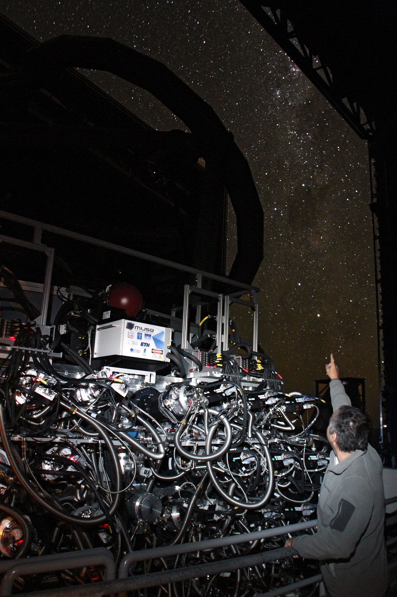
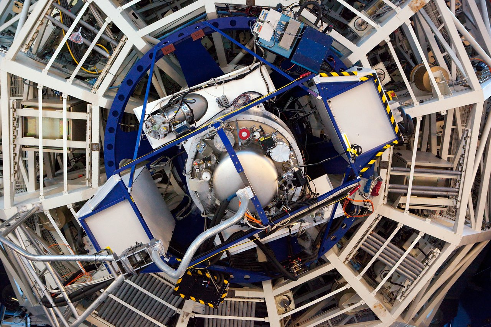
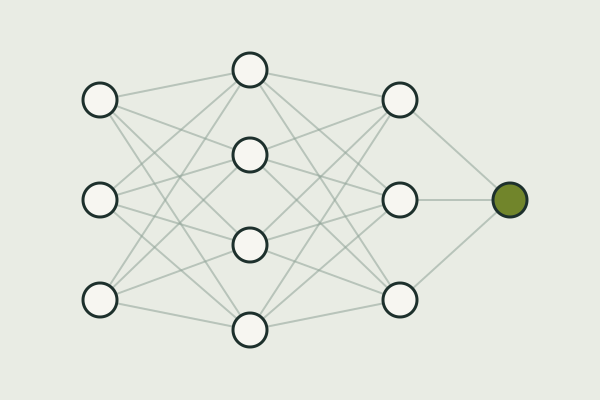

Some context
Planetary nebulae (PNe) are the glowing shells of gas that form at the final evolutionary phases of low-mass stars. They represent important milestones in the lifecycle of stars and provide insights into the chemical evolution of galaxies. The PN phase is short lived, but yet really important on investigating gas dynamics, mass-loss processes and the role of binarity in shaping PNe. They are also significant contributors to the chemical enrichment of galaxies as they rapidly return material to the interstellar medium. Many PNe are morphologically complex, exhibiting bipolar or multipolar structures and small-scale features such as jets, filaments or collimated outflows.
My research
PhD
During my PhD, my research has focused on understanding the physical and chemical processes responsible for the formation of small-scale structures in planetary nebulae, whose origins remain an open question in the field. In particular, I have been investigating their physical and chemical properties, as well as their role in the evolution of planetary nebulae. To address these questions, I have been analyzing integral-field spectroscopic data obtained with MUSE and ERIS, complemented by spectroscopic observations from X-shooter, for a sample of small-scale structures.
ESO studentship
In March 2026, I was awarded the ESO Studentship in Chile, where I expanded the scope of my research from studying small-scale structures within planetary nebulae to investigating these objects across multiple spatial scales, encompassing both their internal structures and global properties. My research aims to establish the connection between the chemical enrichment of galaxies and the evolutionary histories of PNe progenitors, identify trends across different galactic environments, and develop new methods to infer chemical abundances in distant galaxies using planetary nebulae as tracers.
My scientific interests
- Planetary nebulae
- Stellar evolution of low-mass stars
- Chemical enrichment of galaxies
- Metallicity gradients
- Molecules
- Abundances
Tools

Integral field spectroscopy
MUSE and ERIS
Photo: ESO/Ghaouti Hansali/Fernando Selman
Spectroscopy
X-Shooter
Photo: ESO
Machine learning
Data analysis and modeling